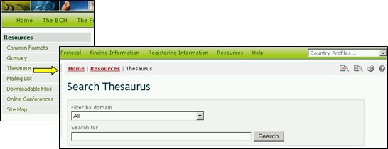

Le Thésaurus fournit une liste de termes prédéfinis et de synonymes apparentés, ou des « vocabulaires contrôlés », utilisés dans un contexte spécifique. Ces termes sont utilisés pour enregistrer et chercher des informations dans les bases de données du CEPRB.
En suivant le lien dans la page Ressources, l’utilisateur accède à la page Domaines du Thésaurus qui fournit en haut une interface de recherche en-dessous de laquelle une liste de domaines des termes dans l’ordre alphabétique.
L’interface Recherche dans le Thésaurus fournit un menu déroulant pour sélectionner des domaines dans le Thésaurus et une boîte pour l’utilisation de mots clé ou de termes dans la recherche. L’utilisateur entre le domaine et/ou mot(s) clé respectifs et sélectionne le bouton Rechercher.

Figure 46

Figure 47
Dans la liste des résultats, un terme est sélectionné de la colonne ID du Terme pour obtenir plus d’information sur son utilisation dans le Portail Central du CEPRB. Ceci conduit l’utilisateur vers le registre de Description des Termes, qui fournit des détails sur le sens du terme et son utilisation dans le Portail Central du CEPRB, y compris des usages plus larges, plus restreints et préférés du terme, ainsi que des traductions dans les six langues officielles des NU.
Exemple : Si un utilisateur veut comprendre l’utilisation du terme transfrontière dans des activités en rapport avec le Protocole, l’utilisateur entre les termes de la recherche Tous dans la boîte Filtrer par domaine et transfrontière dans la boîte Rechercher dans la page Recherche dans le Thésaurus. Sélectionner le bouton Rechercher fournira une liste des registres qui décrivent l’utilisation du terme transfrontière dans plusieurs domaines à l’intérieur du Portail Central du CEPRB. Les résultats de la recherche (en janvier 2008) ont repéré cinq utilisations du terme dans quatre domaines à l’intérieur du CEPRB.

Figure 48
Les domaines de la liste de termes donnent accès à une liste alphabétique de termes utilisés dans chaque domaine. Une clé est fournie pour indiquer quels termes sont « préférés », « non préférés » ou « liés ».
En sélectionnant un terme de la liste arborescente des Termes dans la page des Domaines du Thesaurus l’utilisateur est conduit à l’enregistrement de la Description du Terme. Cet enregistrement donne des détails sur la signification du terme et comment il est utilisé dans le CEPRB, y compris les utilisations les plus générales, les plus restreintes et celles préférées du terme et sa traduction dans les six langues officielles des NU. Dans la description du terme, l’utilisation préférée du terme dans le vocabulaire contrôlé est un terme sélectionné à partir des synonymes qui seront utilisés à des fins d’indexage ou de recherche. Par exemple, maize est l’utilisation du terme préférée à corn dans le CEPRB.

Figure 49